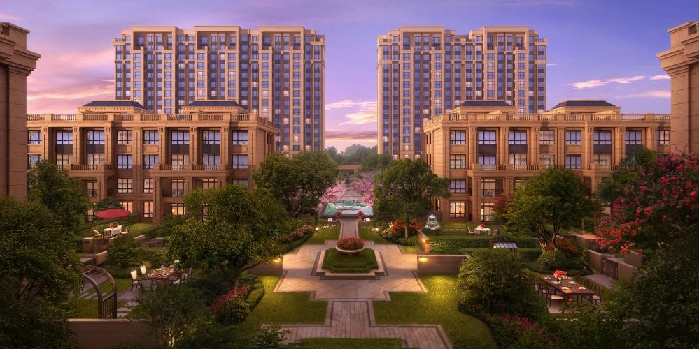
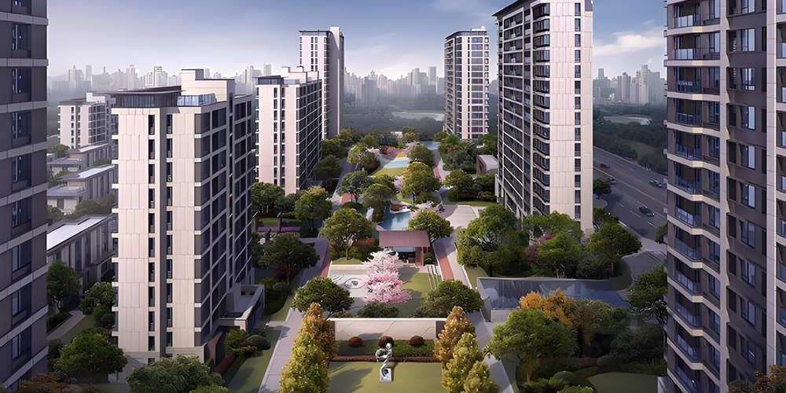
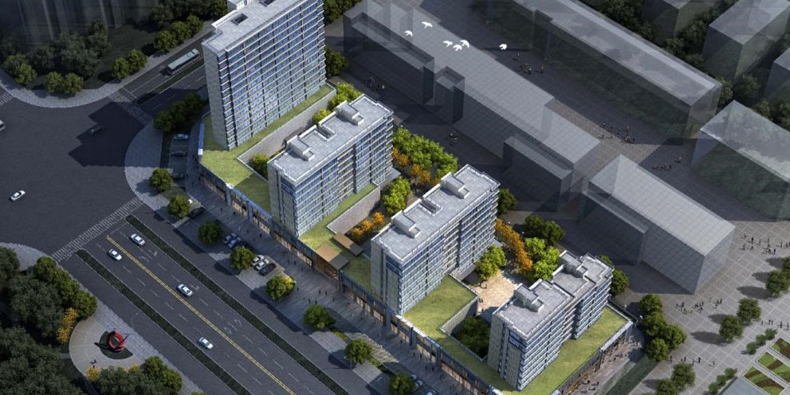

项目中心
PROJECT CENTER

水悦华庭
项目位于文昌路南延、东河路南延、两城路南延三纵，与幸福路东延、泽国大道、104复线三横，共同衔接甬台温铁路.用地面积25331.70㎡，总建筑面积60511㎡，地上建筑面积39585㎡，地下建筑面积20926㎡。
金悦府
金悦府的北边位于温岭的主城区，南边为城南的新中心（也就是城南新区），位于城南新区的核心位置，处于鸣鹤路和S226省道的交汇处。占地总面积约64.34亩（42893平方米），由A、B两个区块组成，是城南目前唯一的商业综合体项目。 A区块就是本项目的商业中心，建筑面积约为2万方的商业，由4幢4层裙房组成。B区为住宅区域，住宅总面积约为7.3万方，共计592户；住宅区域规划了18幢3层联排别墅产品，以及4幢27层、2幢25层的高层产品，共计592户。总建筑面积137533㎡，地上建筑面积94533㎡，地下建筑面积43000㎡。

尚悦嘉园
项目位于温岭松门镇育英东路北侧、义政路以南，位置毗邻老虎山.出让面积 32539 平（48.809 亩）总建筑面积92038.10㎡，地上建筑面积65188.60㎡，地下建筑面积26849.50㎡。
悦湖湾
项目位于温岭市松门镇，总建筑面积71007.8㎡，项目占地面积24084平方米，地上建筑面积54224.8平方米，地下建筑面积16783平方米。
悦江湾名苑
位于温岭市新河镇横板桥村，东至锦绣路，南至规划路，西至规划路，北至富裕路。用地面积49695㎡，总建筑面积136721.8㎡，地上总建筑面积99791.8㎡，高层住宅62286.4㎡，低层住宅12402㎡，回购住宅18380㎡，商业5002.54㎡，回购商业3300.24㎡，物业用房419.66㎡，配套用房1319.06㎡，地下建筑面积36930.0㎡，共计699套。
栖江悦
位于温岭市新河镇，总建筑面积58505.06㎡，项目占地面积19590平方米，地上建筑面积43298.37平方米，地下建筑面积15206.69平方米。

玖隆印象名苑
位于城东街道，总建筑面积30478.52㎡，项目占地面积11905平方米，地上建筑面积2619平方米，地下建筑面积7859.52平方米。
禧悦雅苑
项目用地面积48331㎡，总建筑面积124454.74㎡，地上建筑面积96837.45㎡，地下建筑面积27617.29㎡，幼儿园9600.54㎡，商业3760.06㎡，住宅81647.94㎡，住宅777套。
天骄嘉苑
项目位于温岭市太平街道后应村南屏路南侧。用地面积8270㎡，总建筑面积25143.67㎡，地上建筑面积18026.45㎡，地下建筑面积7117.22㎡，商业1554.17㎡，住宅15884.12㎡，配套用房392.46㎡。住宅208套。